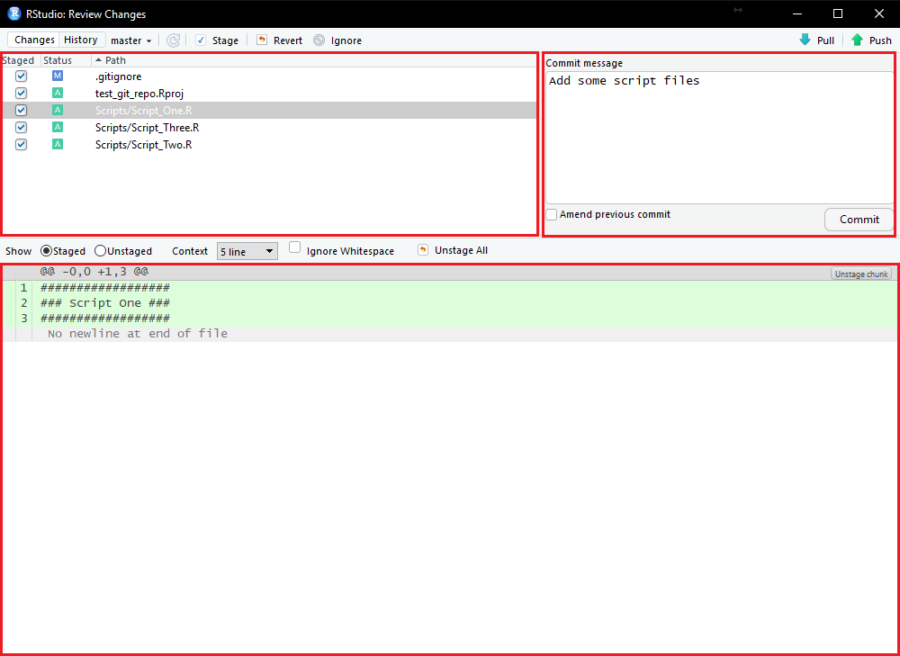

3 Version control with RStudio
3.1 Introduction
Version control is a really powerful tool in a researcher’s toolkit, but also one of the most intimidating. Using git directly through a terminal interface (inside or outside of RStudio) requires learning a new language (git) which can be really off-putting, but newer versions of RStudio have an in-built git interface to make this much more user-friendly.
This guide will serve as a brief introduction to setting up version control with RStudio for new or existing projects without needing to use the terminal.
3.2 Requirements
The minimum technical requirements:
- RStudio v1.1.383 or later
- Mac users:
- Windows users:
- Install git and Git BASH
- Windows doesn’t have a terminal by default. Git BASH serves as a terminal emulator.
3.3 RStudio options
By default, RStudio does not assume a user has a git installation. It also does not always automatically register that one has been installed so the connection must be made.
Open RStudio’s Global Options menu by going to Tools > Global Options. Under the Git/SVN tab you need to tick the Enable version control interface for RStudio projects box, and set the file path to your installed git executable.
 ***
***
3.4 RStudio Projects
Version control in RStudio require you to be using Projects. On top of version control, Projects improve the RStudio experience in other ways and you should be using them anyway…
To create a Project you can either go to File > New Project:
 ***
***
Or use the project menu in the top-right corner:
***
The New Project menu has three options: New Directory, Existing Directory, and Version Control. Each of these follow a different process.
 ***
***
3.4.1 New Directory
The new directory option is for when you’re starting from scratch. First, select New Project from the Project Type menu.
***
Now give your project a name, set where you want it to be a subdirectory, and tick the Create a git repository box.
 ***
***
This creates the project, creates a directory for it, and does all of the leg work setting up a local git repository for the project.
3.4.2 Existing Directory
The existing directory option is for adding version control to an existing directory. The first thing to do is select the directory you want to turn into a project.
 ***
***
You can’t set up a project in an existing directory and set up version control at the same time. This means that we need to manually set up version control after creating the project. Got to Tools > Version Control > Project Setup….
***
Now set the Version control system to Git.
***
And now you can initialise a git repository for the project.
 ***
***
3.4.3 Create a local version of an online repository
The final Project option, Version Control, is to create a project on your local machine that is a clone of an online git repository. The two most common uses for this option are 1) collaboration, and 2) you’ve created the repository on GitHub first.
The first thing you need to do is select which version control system you are using (Git in our case).
***
Now you need to provide the URL for the repository you want to clone, set the name of the directory for your local version, and select where it will be a subdirectory of. The test_git_repo GitHub repository is one I set up for this guide, so feel free to clone it yourself (just change your directory path!).
 ***
***
3.5 RStudio’s Git Interface
RStudio provides a Git interface that is a) only visible after you set up a version controlled project, and most importantly b) less intimidating that the terminal. Almost everything can now be done by point-and-click. A Git menu shows up in the toolbar at the top of the screen, but it is easier to keep everything in the Git pane.
***
The first thing you will notice is a list of files in your directory and some coloured squares. The most important thing to know is that these are not necessarily all of your files, but just those that have changed since the last Git “save state” (more on that to come).
This is where you stage your files to be committed (saved) later. The Status column gives you coloured indicators about what has happened to the file since the last commit:
- Blue: Modified (M) files. These files have changed since the alst commit.
- Yellow: Untracked (?) files. Git has not yet been told you track changes in these files. These are usually new files.
- Green: Added (A) files. These are files that have been created since the last commit. Most Yellow files turn Green when they are staged (i.e. Git now knows to track their changes)
- Red: Deleted (D) files. These files have been deleted since the last commit.
The Status column itself has two columns of these coloured icons. The left column is for staged files and the right column is for unstaged files. Untracked (yellow) files show up in both columns.
3.5.1 Staging Files
You might not always want to commit to the changes you’ve made in all of your files. This is what the staging area is for. You stage the files you want to commit by clicking the appropriate tick box. Thse files are now ready to be committed.
***
3.5.2 Committing
You commit files to generate a “save state” or “backup point”. After staging your files you can click the Commit button in the Git pane to open the a new window and proceed.
This new windows has three panes:
- Staging Area: The same as seen in the Git pane
- Commit Message: You can add a commit message to each of your commits by adding text here. There are no set rules for what to put in a commit message, but something useful helps for tracking things down later. E.g. “Added file X”, “New version of files Y & Z. Fixed model fitting bug”.
- Differences: This pane shows you the differences in a file (whichever one is selected in the Staging Area pane) between the last commit and this pending one. Lines in green have been added, and lines in red removed. Changed lines will show up with both a green and red line.
 ***
When you have staged everything you want to commit and suppied a commit message you can then click Commit in the Commit Message pane. This will pop up a terminal window but you can ignore it if you wish. It will provide a summary of the commit, or show an error is someting went wrong. In this case, we changed 5 files which involved inserting a total of 23 new lines and creating four new files.
 ***
***
If you are running with a local and online version of the repository then your Git pane will now show a message detailing how out of synch they are.
 ***
***
3.5.3 Push/Pull
If you are just using Git locally then you can ignore this section. If you are working with online repositories you will need to learn how to push and pull. The difference between the two is that you push your local changes to the online repository, and you pull changes on the online repository to your local version. You will only need pull if you are collaborating with other people or manually change the online files on GitHub.
If we are ahead of the online repository because we have committed something new then a notification pops up in the Git pane.
***
If we want to send our changes to the online repository then we need to be linked together. If you have created your project by cloning an online repository then this link is already in place, but if you created only a local repository using a new or existing repository then the link need to be created manually. So far this guide has done everything within RStudio’s Git interface, but setting up these links between local and remote (i.e. GitHub) repositories can’t be done with buttons. This means we need to use the terminal!
You only need to run one command in the terminal and then you can run back to the safety of RStudio. The command is as follows, and you just replace
git remote add origin https://github.com/<Account>/<Repository>.gitFor example:
git remote add origin https://github.com/Doi90/test_git_repo.gitNow that the link is established you can push your changes to the online repository by cliking the push button (green up arrow) in the Git pane. Thsi will open a new window showing some Git messages you can ignore.
***
If you need to pull changes then you just use the pull button (blue down arrow).